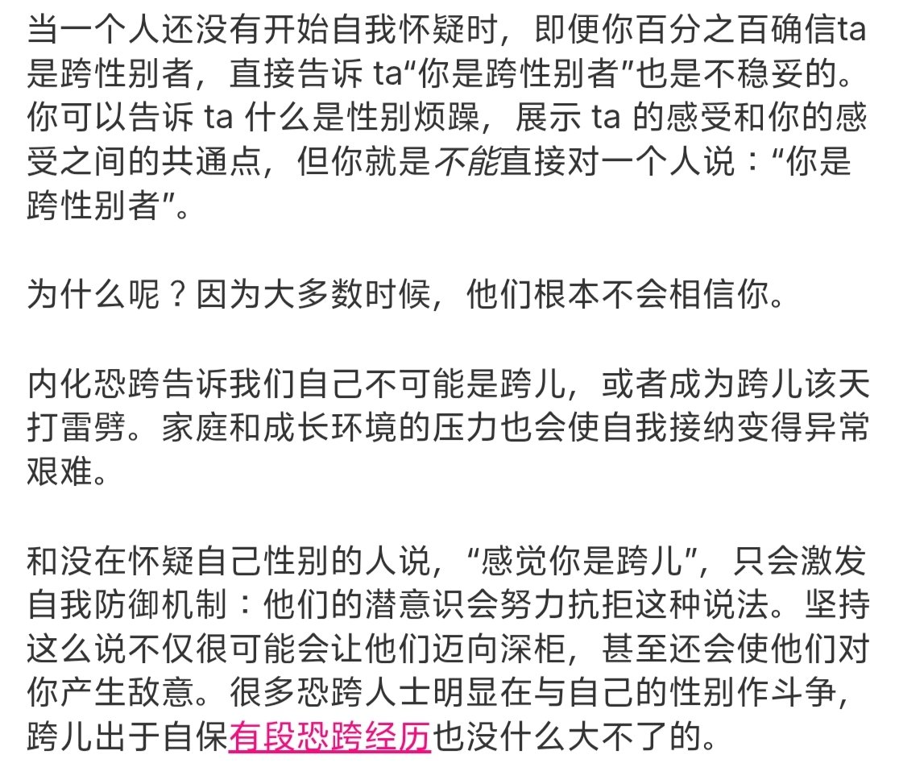

🌙艾丝尔娜·芙蕾琳🌙ᴹᴷ⁻ᴱᵐᵇᵉʳ
@AacerF59616
好奇「盲目友跨」是怎么个盲目，是给予适当引导还是直接说可以进行GAHT之类的，又或是基于病理化框架的关怀。
毕竟「友跨」存在很多种形式，其中不乏将其视为一种人文关怀的，我曾经见过认为跨儿都是精神病患者所以不应该歧视的，这种与其说是友跨不如说是病理化处理，只是形式比较平和罢了，这种居高临下的怜悯总是令我反感。

枣桐酱🍥
@Re_ZaoTon
大家真的不要盲目友跨，小时候的枣桐在群里问问题被温柔大姐姐私信鉴跨，还直白地说我是不是想吃药，当时的枣桐什么都不懂就觉得这是洗脑，并产生了严重的恐跨🥺 https://t.co/ibfEtwK7lE https://t.co/ujOLMoDQiK